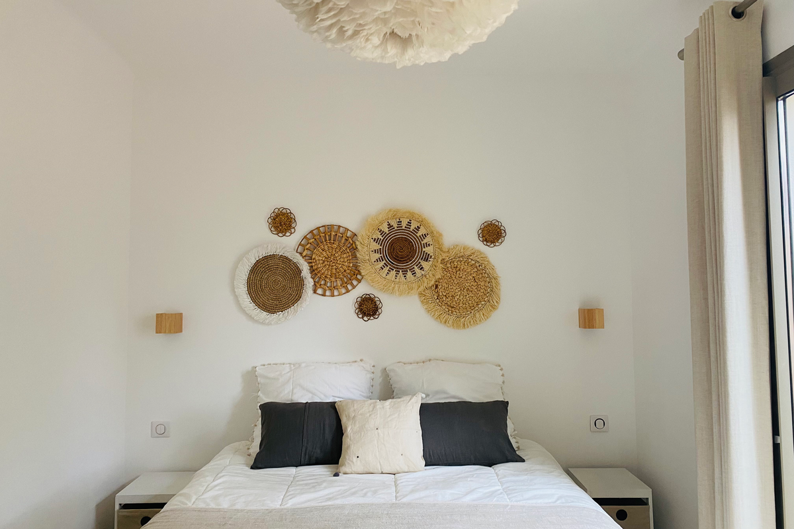
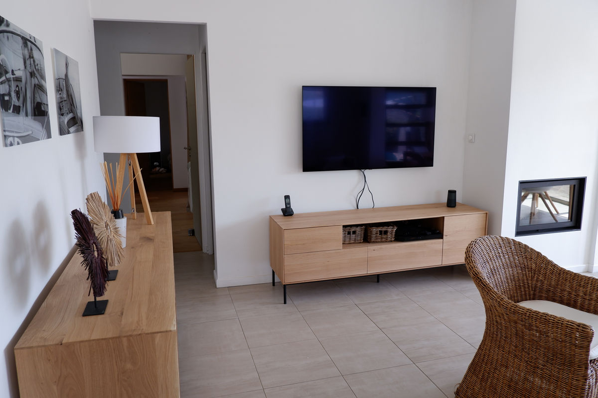

Bagnols-en-Forêt
Bienvenue à la Maison B-Sun.
Découvrez cette maison de charme entièrement rénovée dans le sud de la France, idéale pour accueillir jusqu’à 6 personnes avec ses 3 chambres et 3 salles de bain.
- 6 personnes 3 chambres et 3 salles de bain.
- Piscine privée Wi-Fi, TV et 2 places de parking.
- À 20 min de la mer À 1 km du village de Bagnols-en-Forêt.

À propos
Votre prochaine maison de vacances dans le sud de la France.
Laissez-vous séduire par cette maison de charme entièrement rénovée, nichée sur un terrain de 1 000 m², idéale pour un séjour en famille ou entre amis.
Avec ses 3 chambres, elle peut accueillir confortablement jusqu’à 6 personnes et dispose de 3 salles de bain, offrant espace et intimité à chacun.
Profitez pleinement des beaux jours grâce à sa piscine privée de 3 x 7 m. La propriété dispose également de 2 places de parking privées pour votre tranquillité.
Située à 1 km du charmant village de Bagnols-en-Forêt, vous profiterez d’un cadre authentique, avec toutes les commodités à proximité : boulangerie, supermarché, restaurants et bien plus encore.
Intérieur
Des espaces lumineux, sobres et prêts à vivre.
Un aperçu du confort intérieur de la maison : chambres, salle de bain, séjour, cuisine et espace bureau.

Chambre
Ambiance calme et lumineuse
Une chambre rénovée avec une atmosphère douce et apaisante.

Salle de bain
Confort moderne
Des salles de bain pensées pour le confort et l’intimité de chacun.

Séjour
Espace salon
Un séjour chaleureux pour se retrouver après une journée au soleil.

Maison rénovée
Finitions sobres et actuelles
Une rénovation simple et élégante, fidèle à l’esprit du lieu.
Connexion sur place
Pour rester connecté tout en profitant du rythme du Sud.
Équipement inclus
La maison est équipée pour un séjour confortable au quotidien.
Coin travail
Un espace dédié pour télétravailler si nécessaire.

Coin bureau
Un espace pratique pour travailler ou organiser le séjour.
Le bureau permet d’avoir un vrai coin calme pour travailler à distance ou préparer les sorties et excursions dans la région.
Extérieur
Terrasse, piscine et soleil du Sud.
Les extérieurs sont pensés pour profiter des beaux jours entre repas dehors, détente et baignades.

Terrasse
Salon extérieur
Un espace idéal pour lire, discuter ou prendre l’apéritif en fin de journée.

Piscine privée
Détente au bord de l’eau
Une piscine privée de 3 x 7 m pour profiter pleinement des journées ensoleillées.
Maison
Un cadre simple et élégant
La maison s’ouvre sur des espaces extérieurs faciles à vivre tout au long du séjour.
Situation idéale
Entre village, mer et destinations emblématiques.
Bagnols-en-Forêt
Un village typique et authentique, à seulement 1 km de la maison.
Plages à 20 minutes
La mer reste très accessible pour alterner sorties et journées maison.
Cannes, Saint-Tropez, Nice
Des destinations prisées à portée de route pour découvrir toute la région.
Contact
Pour plus d’informations, contactez-nous directement.
Ce site vitrine fonctionne sans système de réservation. Les demandes passent directement par mail ou par téléphone.
Pour les demandes d’informations et de disponibilité.
Un second contact direct pour répondre rapidement à vos questions.
Appelez-nous directement pour échanger sur les dates et le séjour.